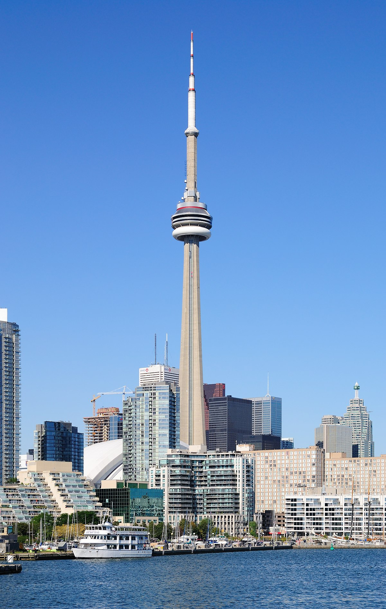
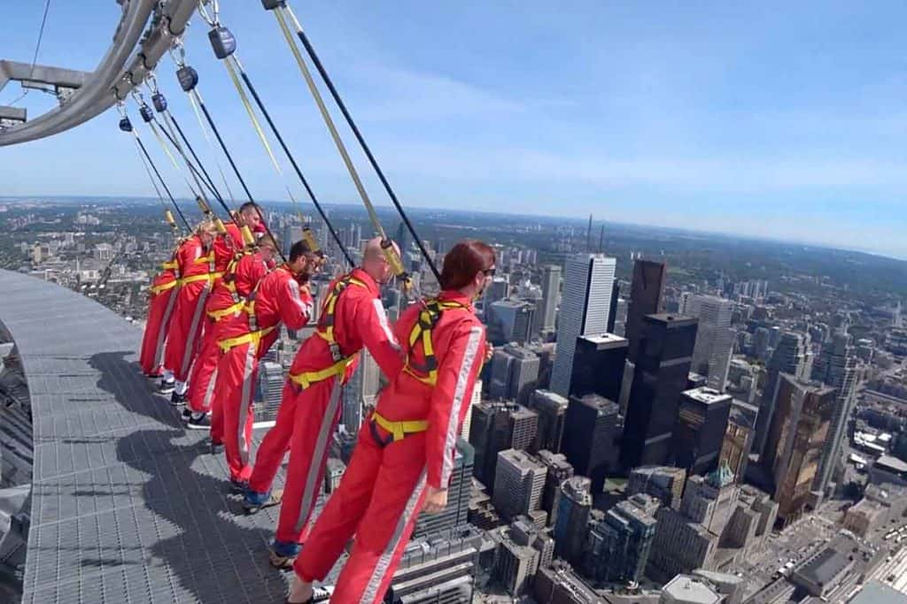
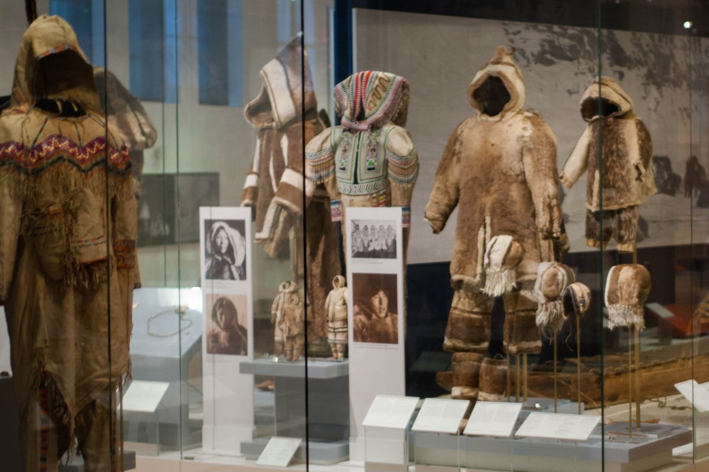
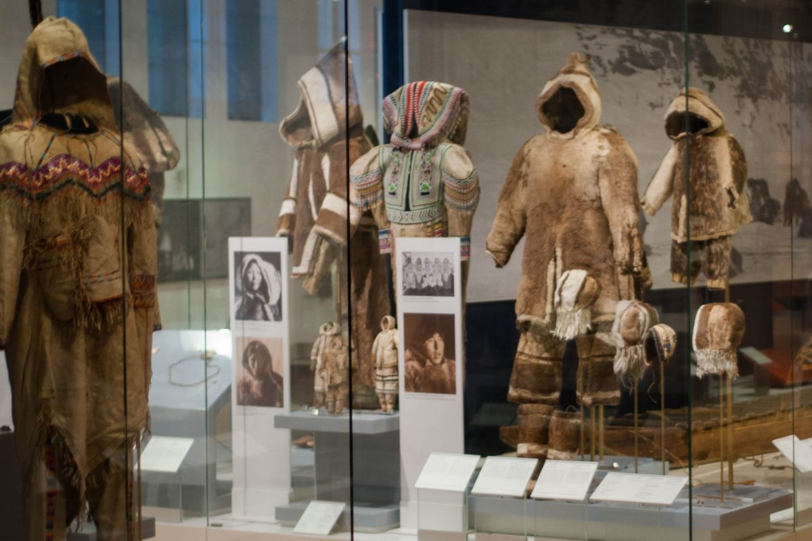
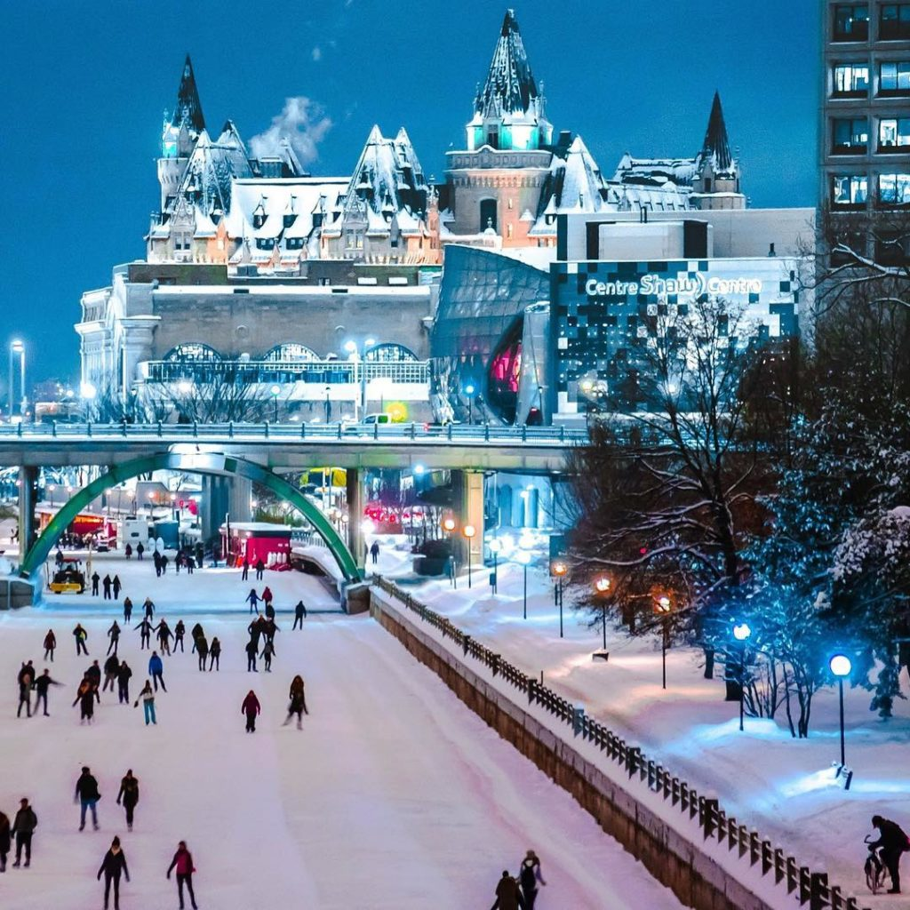
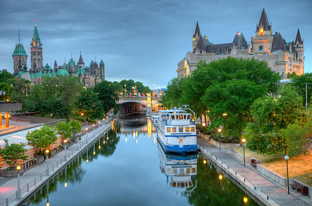
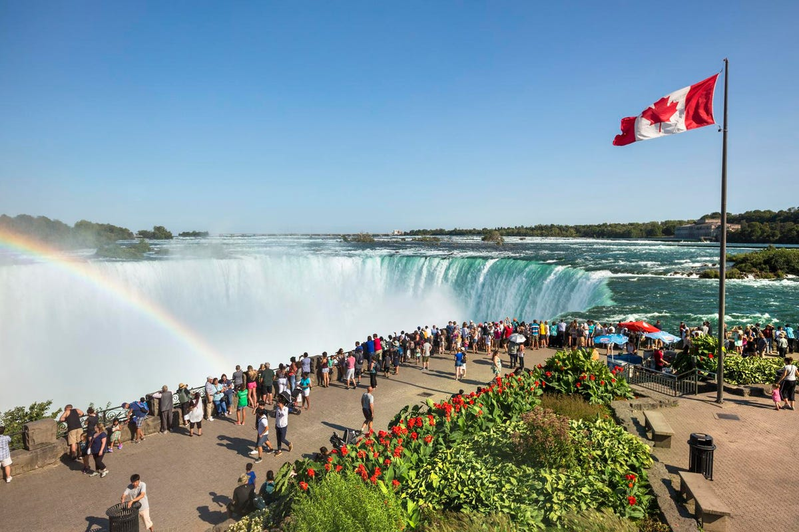
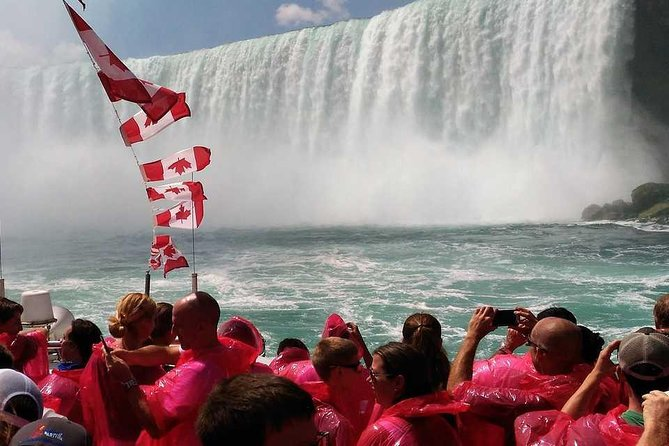
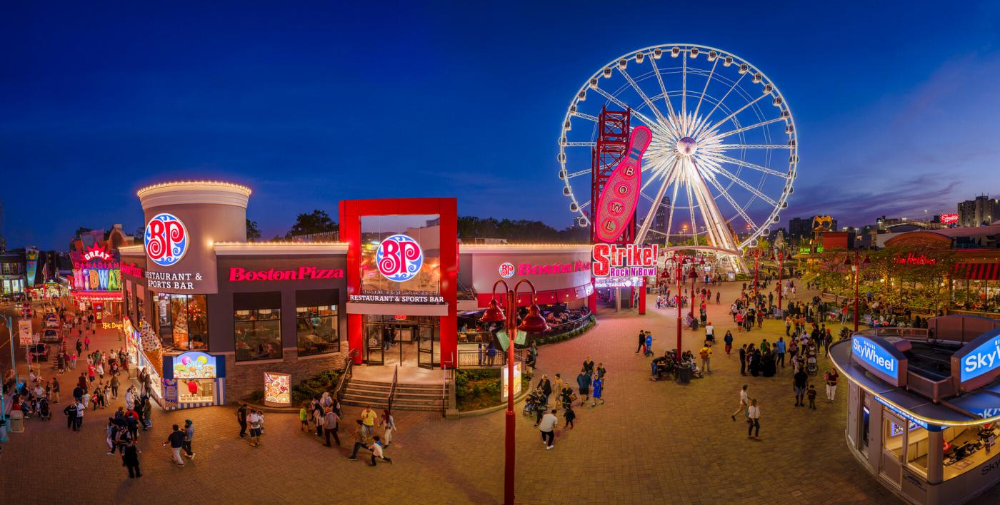

The City Of Toronto
CN TOWER
  CN Tower is a 553.3m high. It is the tallest standing structure in the western hemisphere.
If you are brave, you can do the "Edge Walk" on the CN Tower. Where you walk full circle hands-free on a 1.5 meter ledge.
Royal Ontario Museum
 

Royal Ontario Museum is the largest museum in North America and largest in Canada. It attract over 1 million visitors every year.
It was established on April 16, 1912, and opened on March 19, 1914. With 6,000,000 items and 40 galleries that shows wide collections around the world.
The City Of Ottawa
Parliament Building

This is where the Canadian Parliament are houses. It attracts approximately 3,000,000 visitors every year.
This was designed in a Gothic Revival style,and opened on June 6, 1866, about a year before Canada's Confederation.
Visitors can get a free tickets for a guided tour of the Parliament.
Rideau Canal
 This is a UNESCO World Heritage Site of Canada's Capital. It has a length of 7.8 km. You can skate on it during the winter season.
When the canal is not frozen, it serves as a waterway that connects Ontario to the lake Ontario and the Saint Lawrence River.
Niagara Falls/Clifton Hill



This is where you can see the famous Niagara Falls, Canada side. This city is across the river of Niagara Falls, New York.
Tourist can enjoy a boat ride to see up-close the Niagara Falls. Tourist can also enjoy the Clifton Hill just beside the Niagara Falls.
It has many activites including the Niagara Skywheel.